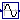
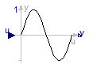
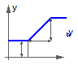

For all models in this package an FMU must be generated
Extends from Modelica.Icons.Package (Icon for standard packages).
| Name | Description |
|---|---|
|  Sine | |
 FMITest.NonlinearSystems.InverseSine.FMUModels.Sine
FMITest.NonlinearSystems.InverseSine.FMUModels.Sine

Extends from Modelica.Blocks.Math.Sin (Output the sine of the input).
| Type | Name | Description |
|---|---|---|
| input RealInput | u | Connector of Real input signal |
| output RealOutput | y | Connector of Real output signal |
 FMITest.NonlinearSystems.InverseSine.FMUModels.Ramp
FMITest.NonlinearSystems.InverseSine.FMUModels.Ramp

Extends from Modelica.Blocks.Sources.Ramp (Generate ramp signal).
| Type | Name | Default | Description |
|---|---|---|---|
| Real | height | 1 | Height of ramps |
| Time | duration | Durations of ramp [s] | |
| Real | offset | 0 | Offset of output signal |
| Time | startTime | 0 | Output = offset for time < startTime [s] |
| Type | Name | Description |
|---|---|---|
| output RealOutput | y | Connector of Real output signal |